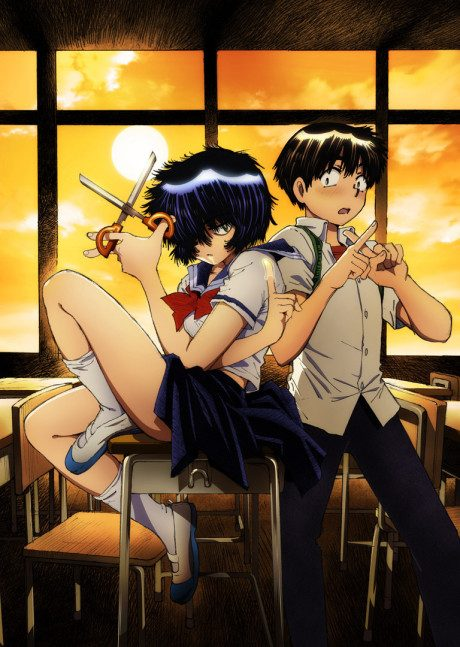
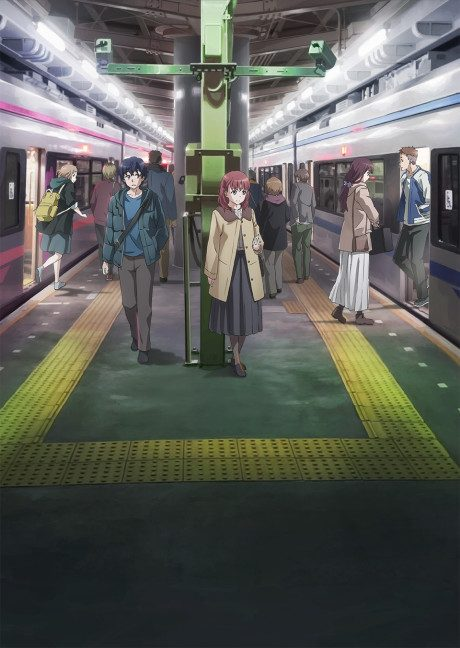
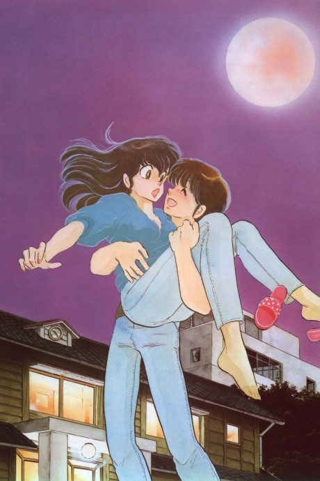
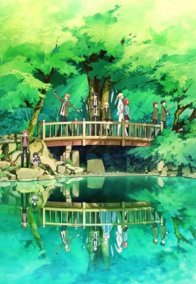

Yamada's First Time: B Gata H Kei
B型H系
Yamada, a beautiful high school girl, wants a hundred boyfriends but is completely inexperienced.
After the anime, read the manga from Chapter 207.
6.4AniList score
—Animeter, no votes yet
12episodes
Rate it or report where you stopped
Is it worth pushing through?
Built from what visitors report across all 12 episodes.
Loading reports…Checking what other people said about this one.
Sign in above with your email to add your report.
More like Yamada's First Time: B Gata H Kei
 Manga Ch. 248.1
Manga Ch. 248.1
Unclear7.1
O Maidens in Your Savage Season Manga Ch. 1528.3
Manga Ch. 1528.3

Manga Ch. 376.9 Manga Ch. 767.9
Manga Ch. 767.9
 Manga Ch. 337.8
Manga Ch. 337.8
 Unclear7.9
Unclear7.9

Original7.0
Manga Ch. 296.4
Ao-chan Can't Study!
Done7.8
Unclear7.5
KAIJU GIRL CARAMELISE
Original7.3